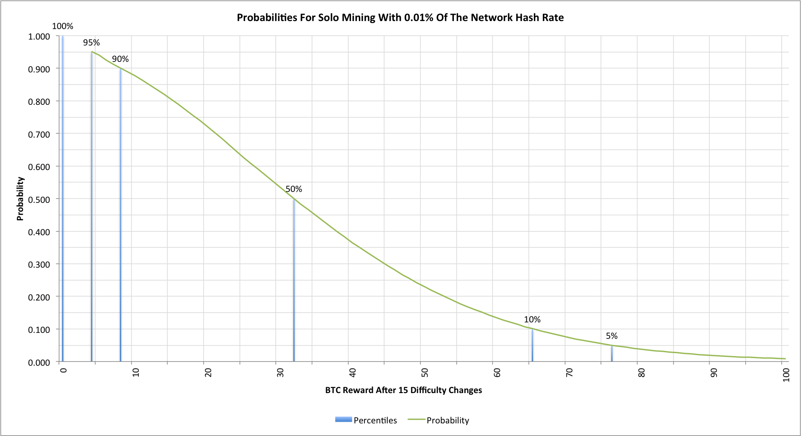
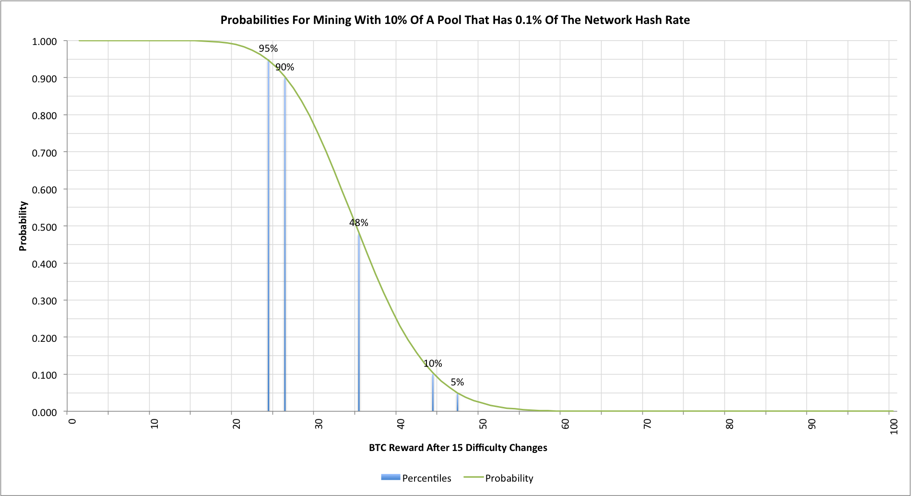
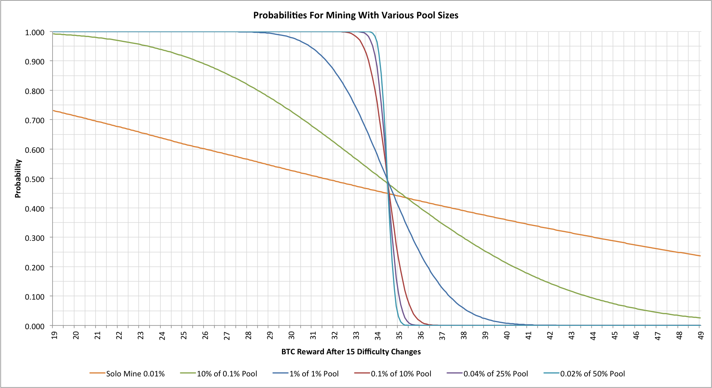

What’s the best way to get a return when we mine Bitcoins? Should we mine on our own, mine with a small pool or mine with a large pool? How much difference does it really make?
Whether we want to be a gambler or an investor is really a question of how much risk we’re prepared to take, but what are those risks and what are the odds of success?
Starting thoughts
Before we can look at the odds of getting a particular return we need to establish a few starting conditions. Let’s assume that we’re planning to mine using hardware that, at the outset of our mining, is able to hash at 0.01% of the total global hash rate. If we have 120 PH/s of hashing then that means that we have 12 TH/s of hashing hardware, but if that global rate was 600 PH/s then we’d need 60 TH/s. The actual numbers don’t matter though, just the percentages.
We’re going to assume that the network is expanding at 1% per day. For most of 2014 it has been above this but the trend is generally downwards and we need to assume something. At 1% per day then over 6 months (approximately 183 days) we’d see the global hash rate increase by a factor of 6.177 by the end, so our 0.01% of the network is only 0.0016188% after the 6 months. We’re not expecting to add new capacity as we go though, so we only have the hardware that we start with.
Bitcoin mining is highly erratic (see “Hash rate headaches") so it’s not easy to calculate how our mining will progress so instead I built a Monte Carlo simulator. The results presented here all come from that simulation with 10M simulations of each scenario to ensure that the data is well smoothed.
Solo mining
Let’s start with the simplest case. We’re going to assume that we’ll use all of our hashing capacity to mine for blocks on our own. What might we expect?

The chart shows 15 difficulty changes (6 months). It plots the cumulative probability of achieving a particular BTC reward. 50% of miners will achieve 32 BTC or less at the end of the 6 months, while 5% will receive nothing at all! It’s not possible to get smaller amounts in this time period by solo mining so that’s why there’s a discontinuity in the graph at the start. 10% of miners will actually receive 65 BTC or more.
The gambler in us might be attracted to the potential for high rewards; that part of us that wants to be an investor though is probably going to look at this graph in horror!
Mining with a pool
The easiest way to mitigate some of the risk is to join a mining pool. Let’s ignore pool fees or anything that doesn’t just give an equal share for hashing capacity provided to the pool. What might the same hardware achieve when run this way?

Our gambler self may be disappointed to see that the potentially large payouts have vanished; 10% of miners will achieve 44 BTC or better. Our, more rational, investor self is probably much happer though as only 10% of miners achieve less than 26 BTC. The simple exercise of merging with a pool that has 10x the total mining capacity has made a huge difference to the variance of the mining rewards. Our 50% reward point is higher too (the chart shows 48% to keep things simpler)!
What are the effects of using larger mining pools?
Now that we can see the reduction in variance from using a mining pool we really need to ask questions about just how much does the mining pool size change the statistics. In order to do that we need to consider a few different ways to deploy our hardware.
The following graph shows a much narrower span of BTC rewards. It also shows the effects of mining as part of a pool controlling 0.1%, 1%, 10%, 25% and 50% of the global hash rate. That last one is sure to be controversial as a pool with 50% of the hash rate is deemed to pose a potentially serious risk, but rational miners have been keen to participate in such pools. Just how good are the reasons to do so?

The first things to notice are just how bad the solo mining and 10% membership of 0.1% pool now look! The larger pools are definitely more attractive to anyone seeking predictable returns.
Mining pools are here to stay?
In a simpler world the Bitcoin mining network might only be expanding very slowly and miners could attempt to allow time to smooth out the effects of mining variance. In practice though, as the network expands and the ever-increasing difficulty consumes the usefulness of any current hardware, then best known way to avoid the vagaries of random mining behaviour is to use large blocks of co-ordinated mining. Solo mining and mining in small pools is a strategy for gamblers, not investors.
Arguments may rage regarding the risks posed by large mining pools and their tendency towards centralizing our supposedly decentralized network, but it seems very unlikely that they will be disappearing any time soon. Any proposal to remove them will have to address the issue of variance if it is to gain any sort of widespread acceptance.